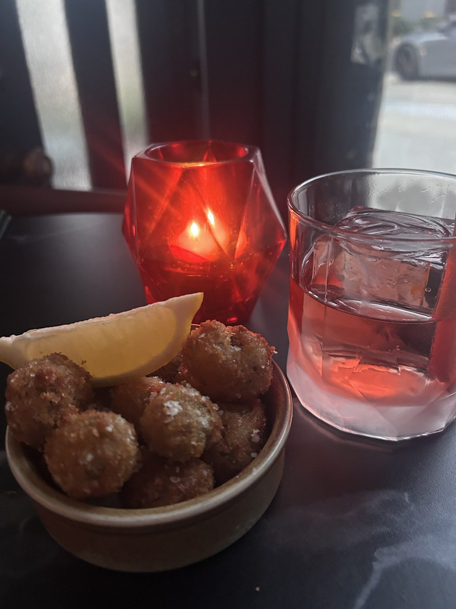
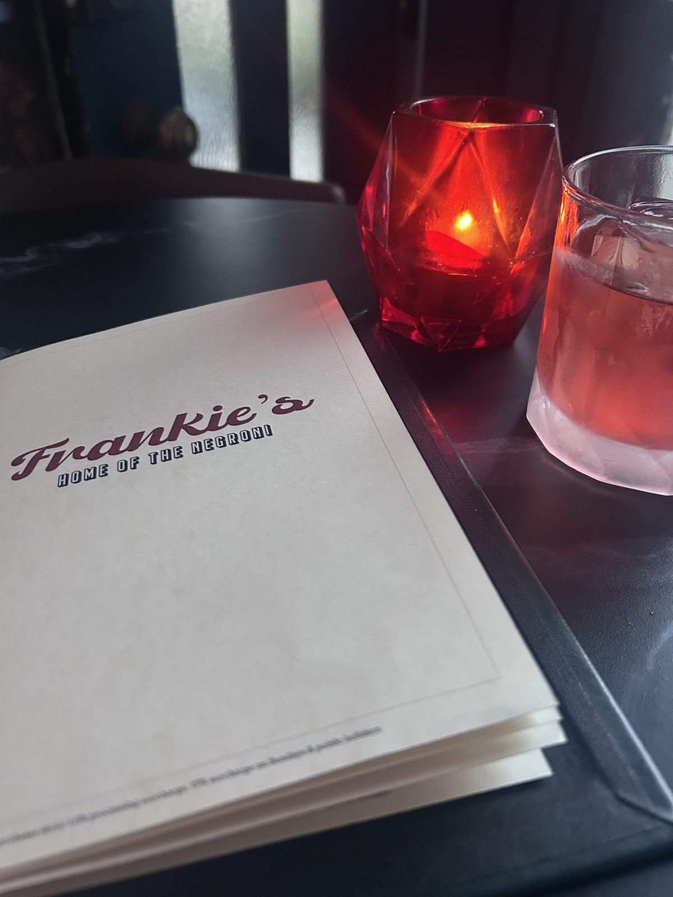
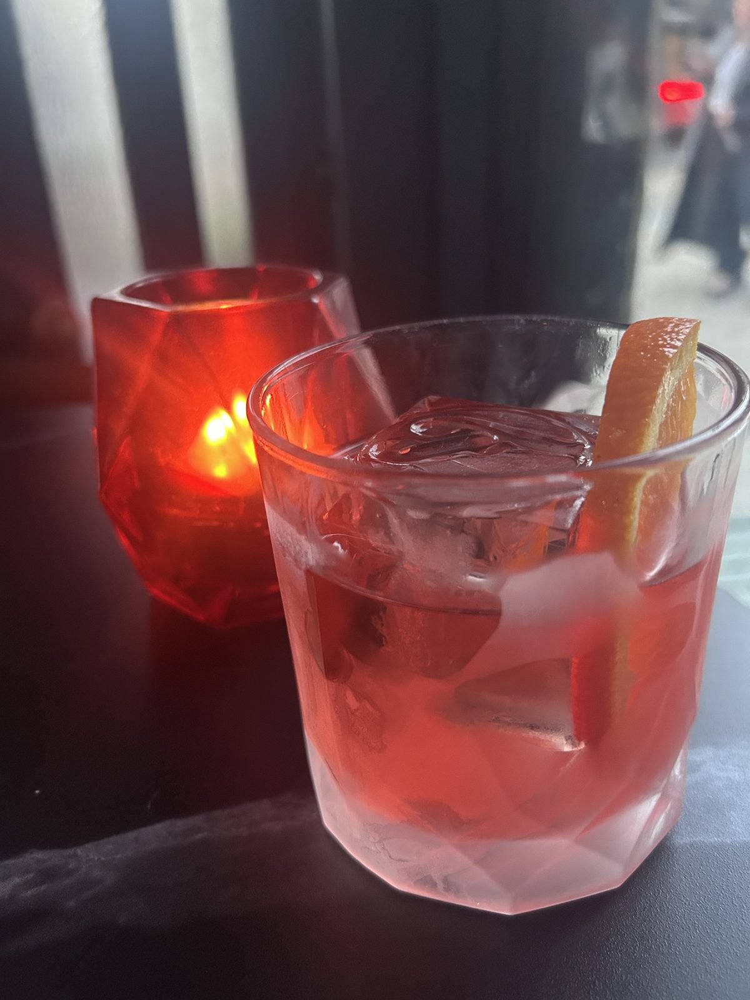

Frankie's, Surry Hills: a perfect Negroni, fried olives and a frosty welcome
Frankie Cadillac in Surry Hills, the Home of the Negroni: a perfect Negroni and fried olives to die for. Great food and drinks, but a cold first welcome.
· Frankie Cadillac (Frankie's, Home of the Negroni)I was meeting friends for dinner at 7, and I was really early. It was after work and I wanted a snack, so I popped into Frankie’s on Albion Street in Surry Hills.
A perfect Negroni and fried olives to die for. Exactly what I needed before a night out.
A quiet start
When I walked in, it was quiet, with not many people there. Meanwhile, the bar down the road was packed. You couldn’t even get a table.
For some reason, Frankie’s doesn’t have that buzz the bars around it have. But I have to admit, I absolutely love the atmosphere here.
What I had
I love the menu. There’s enough to choose from when you’re going in on your own.
I ordered a Negroni, which was absolutely perfect. This is the Home of the Negroni, after all. I added the fried olives, and they were to die for.
That combination, as a snack before going out, was exactly what I needed.
The decor
I love the decor. Moody light, red candles on dark tables, and that menu with Frankie’s in burgundy script. It’s a beautiful spot to sit with a drink.

The one thing that put me off
When I first walked in, the staff gave me the impression I was annoying them. I walked up to the bar and asked, “Hi, are you open?” and the bartender’s look made me feel very unwelcome.
I honestly almost turned around and walked out.
They warmed up soon after, and from there it was all fine. Maybe they were just having a bad day. But first impressions tend to stick with you, and my first impression was that I wasn’t welcome.
Who it’s for
- Negroni lovers: it’s the Home of the Negroni for a reason.
- Solo drinkers: there’s enough on the menu for one.
- Pre-dinner drinks in Surry Hills: a drink and a snack before you head out.
- Anyone who loves a relaxed crowd: the people coming in were my kind of people.
I’m definitely coming back to try more of the menu.
My verdict: 8/10. Great food, great drinks and an atmosphere I love. It loses points for a frosty first welcome. First impressions count.

